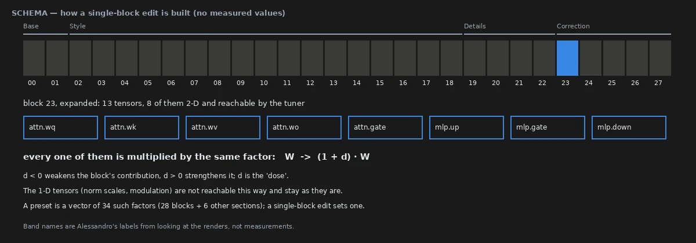
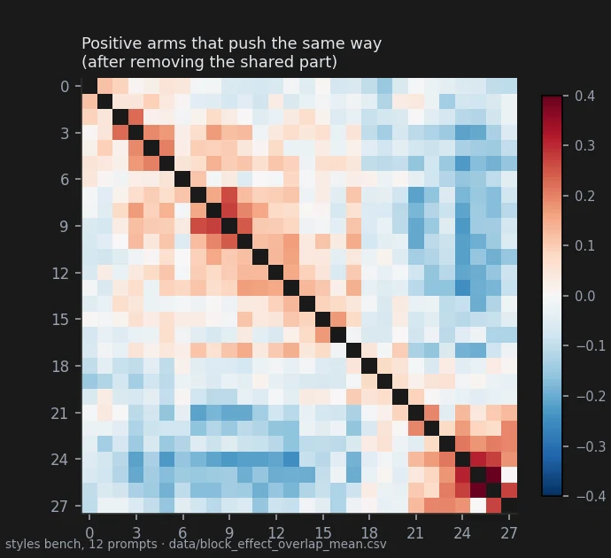
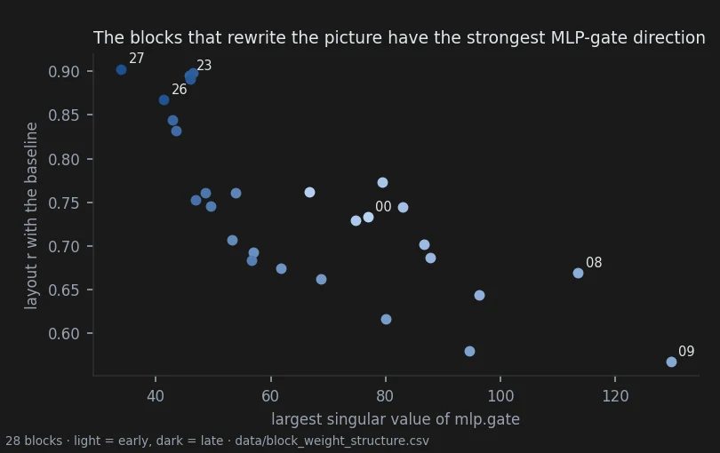
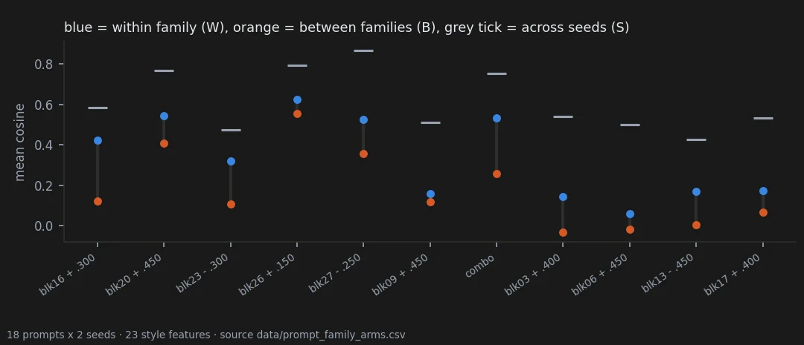
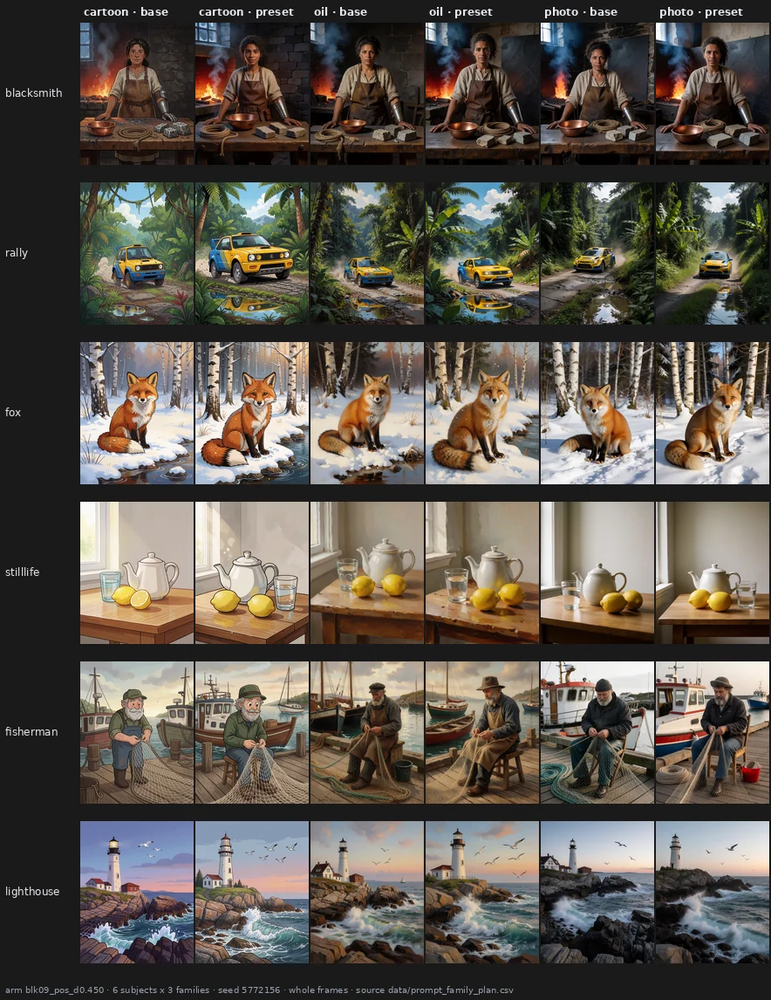
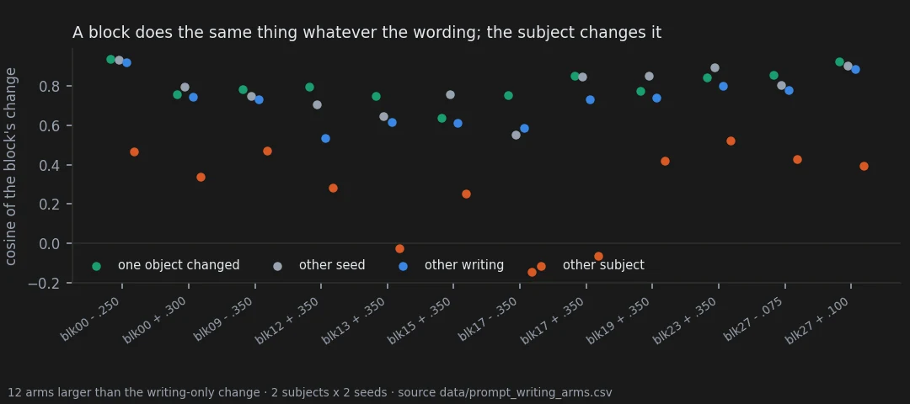
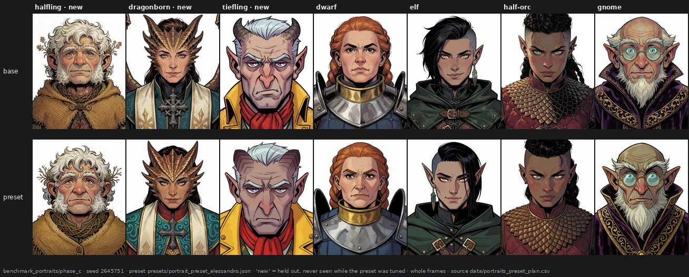

Knobs inside the weights: single-block scaling in Krea-2 — results
Scope. Everything here is about one model, Krea-2 (28 single-stream transformer blocks), edited without training by multiplying the weights of single blocks. It is an investigation into whether controllable "knobs" exist inside the weights, not a tool that competes with post-production. The exploratory lab notebook that led here is in the exploratory notebook and stays the record of every test run; this folder holds only the results that were confirmed, or that the report needs in order to be honest about what was not.
New here? Start from the story: what we found, told with pictures. This page is the report: abstract, related work, and the table of every claim.
Abstract
Does a text-to-image diffusion transformer hold controllable "knobs" in its own weights — directions that do one thing, consistently across prompts, seeds and wordings, and can be reached without training? We study Krea-2, a diffusion transformer with 28 single-stream blocks, edited by multiplying the weight matrices of one block by 1 + d. An exploratory atlas of 1,412 renders (23 prompts, every block in both directions) produced claims that were then frozen and tested on new benches, each pre-registered with its decision rule and scoring code, opened by a pixel-identical reproduction check, and scored only after an eye pass had been deposited. Block 23 is a saturation knob: chroma moves monotonically with the dose in 15 of 16 prompt-seed cells, roughly in proportion to it (doubling the dose multiplies the gain by 1.76), and at the same colour gain it disturbs the rest of the picture less than adding "colorful" to the prompt (layout 6 of 7 cells, LPIPS 7 of 7, DINOv2 6 of 7) — although in 9 of 16 cells the words reach further. Presets built from late blocks are coherent inside a family of prompts written in one style: within-family coherence 0.53 against 0.26 between families and 0.76 across seeds, strongest on cartoon and weakest on photographs, at a visible cost in noise at the doses used. Middle blocks change content most (DINOv2 similarity 0.87–0.88) at no measured quality cost and look family-coherent to the eye, but no metric we tried records that coherence, and one of them can change a subject's identity. A preset written by eye from the block map carries over to new pictures: calibrated on four character portraits and frozen, it gave three characters it had never seen the look its author had described, about as coherently as on the four (0.51 against 0.61), and an observer blind to the condition chose it as the closer match in 56 of 56 comparisons; each character stays recognisable, though the face moves slightly more than under a change of seed (ArcFace 0.74 against 0.80) and a prompted expression can go flat. Rewriting a prompt changes what a block does about as much as changing the seed, and far less than changing the subject; the pre-registered test of this is inconclusive by its own rule. We also report four claims that were made from statistics and withdrawn after the images were opened, and the limits of a study whose eye passes were made by a single observer who knew the conditions — all except the portrait test, which was judged blind.
Introduction
The usual ways to steer a diffusion model add something to it: a trained adapter, a learned direction, a hook on the activations at inference. This project asks whether some control is already there, in the base weights, at the granularity of a block. The edit is the simplest possible one: the eight weight matrices of a block are multiplied by one number, and a preset is a vector of such numbers. Nothing is trained, nothing runs at inference beyond the patched weights, and any preset can be written down in one line.
What that buys in practice is shown best by the last test. I looked at what every block does to four drawn characters, wrote a preset of ten small numbers aiming at a more American-comic look, flat colours and clean lines, froze it, and applied it to seven characters at four new seeds. Three of them had never been rendered while I tuned it. Here they are, base above and preset below:
Try it yourself. The same blind choice, 14 pairs, takes two minutes: take the test. Take it before looking at the pictures below if you can.

Someone who had never seen the project, shown each pair side by side without knowing which was which, picked the preset as the closer match to that description every time, 56 times out of 56. The characters stay themselves, but not untouched: the face moves a little more than a change of seed would move it, and a prompted expression can turn into a frown (page 28).
The project started with hand-calibrated presets over the whole stack (notebook page 01) and an exploratory notebook of tests on permutations, rotations and block groups (notebook). Single blocks turned out to be the more useful unit: they are finer than the tuner's macro-blocks, and some of them behave the same way on every prompt tried. The pages below report what survived confirmation:
- the edit and the instrument, including what the eye pass is and is not (20);
- a map of the 28 blocks, and a provisional guide to what each one does (21);
- one knob, saturation, confirmed (22);
- presets for a family of prompts (23);
- robustness to how the prompt is written (24);
- standard metrics on the same images (25);
- a preset made by eye from the map, tested blind on characters it never saw (28);
- what did not work, and the limits (26); other kinds of edit (27).
Related work
Layer and block specialisation. B-LoRA finds two blocks of SDXL that separate content from style [1]. Sparse autoencoders on SDXL Turbo find blocks specialised in composition, local detail, and colour, illumination and style [2]. Stable Flow finds that the layers that matter for editing in diffusion transformers are scattered through the stack, detecting them by bypassing layers and measuring the DINOv2 change [3]; FluxSpace edits attributes through the representations of transformer blocks in rectified-flow models [4]. Our map agrees that blocks specialise in a diffusion transformer and that the specialisation is not contiguous (page 21), but works on the weights rather than on activations.
Training-free re-weighting. FreeU rescales backbone and skip features of a U-Net at inference to change output quality [5]. It is the closest precedent for scaling part of a network without training; here the scaling is applied once to the weights of one block of a transformer.
Learned controls in weight space. Concept Sliders train low-rank adaptors that act as attribute sliders [6]; weights2weights finds interpretable directions in the space of customised LoRA weights [7]; LoRA Block Weight scales a LoRA's effect block by block in practice [8]. Here nothing is learned and the knob is a block of the base model, not a learned direction.
The same edit already exists as a tool. Scaling the base weights of single blocks, training-free,
is what two ComfyUI tools for Flux, published in September 2024 and developed independently of the
tuner used here, already do: the FluxBlocksBuster node [17] gives one multiplier
per block, and Block Patcher [18] sweeps a list of regular expressions over the block tensors,
rendering one image per value. Read from their source, both apply exactly the operation studied here
— W := W x v through ComfyUI's add_patches with strength_patch = 0 — and so does the tuner used
in this report; Block Patcher's regex is in fact finer than our per-block vector, reaching one tensor
at a time. Neither tool publishes a map, a dose, or a claim about what any block does: their author
calls them probing tools. The contribution here is therefore not the edit but its
characterisation — a measured per-block map with calibrated doses, pre-registered confirmations,
and the failures (docs/prior_work_block_scaling_tools.md).
Model and metrics. Krea-2 is described in its technical report [9]. Image quality and similarity are measured with CLIP-IQA [10], BRISQUE [11], CLIPScore [12], LPIPS [13], DISTS [14], SSIM [15] and DINOv2 [16] (page 25).
References
- Frenkel, Vinker, Shamir, Cohen-Or. Implicit Style-Content Separation using B-LoRA. ECCV 2024. arXiv:2403.14572
- Surkov, Wendler, Mari, Terekhov, Deschenaux, West, Gulcehre, Bau. One-Step is Enough: Sparse Autoencoders for Text-to-Image Diffusion Models (first version titled Unpacking SDXL Turbo: Interpreting Text-to-Image Models with Sparse Autoencoders). arXiv:2410.22366
- Avrahami, Patashnik, Fried, Nemchinov, Aberman, Lischinski, Cohen-Or. Stable Flow: Vital Layers for Training-Free Image Editing. CVPR 2025. arXiv:2411.14430
- Dalva, Venkatesh, Yanardag. FluxSpace: Disentangled Semantic Editing in Rectified Flow Transformers. arXiv:2412.09611
- Si, Huang, Jiang, Liu. FreeU: Free Lunch in Diffusion U-Net. CVPR 2024. arXiv:2309.11497
- Gandikota, Materzyńska, Zhou, Torralba, Bau. Concept Sliders: LoRA Adaptors for Precise Control in Diffusion Models. ECCV 2024. arXiv:2311.12092
- Dravid, Gandelsman, Wang, Abdal, Wetzstein, Efros, Aberman. Interpreting the Weight Space of Customized Diffusion Models. NeurIPS 2024. arXiv:2406.09413
- hako-mikan. sd-webui-lora-block-weight (software). github.com/hako-mikan/sd-webui-lora-block-weight
- Lee, Millon, Zhuo, Newton, Filatov, et al. (Krea). Krea 2 Technical Report, 23 June 2026. krea.ai/blog/krea-2-technical-report
- Wang, Chan, Loy. Exploring CLIP for Assessing the Look and Feel of Images. AAAI 2023. arXiv:2207.12396
- Mittal, Moorthy, Bovik. No-Reference Image Quality Assessment in the Spatial Domain. IEEE TIP 2012.
- Hessel, Holtzman, Forbes, Le Bras, Choi. CLIPScore: A Reference-free Evaluation Metric for Image Captioning. EMNLP 2021. arXiv:2104.08718
- Zhang, Isola, Efros, Shechtman, Wang. The Unreasonable Effectiveness of Deep Features as a Perceptual Metric. CVPR 2018. arXiv:1801.03924
- Ding, Ma, Wang, Simoncelli. Image Quality Assessment: Unifying Structure and Texture Similarity. IEEE TPAMI 2022. arXiv:2004.07728
- Wang, Bovik, Sheikh, Simoncelli. Image Quality Assessment: From Error Visibility to Structural Similarity. IEEE TIP 13(4), 2004.
- Oquab, Darcet, Moutakanni, Vo, Szafraniec, et al. DINOv2: Learning Robust Visual Features without Supervision. arXiv:2304.07193
- cubiq. FluxBlocksBuster+, node in ComfyUI_essentials (software),
conditioning.py. github.com/cubiq/ComfyUI_essentials - cubiq. Block_Patcher_ComfyUI — experimental sampler to iterate through blocks weight (software). github.com/cubiq/Block_Patcher_ComfyUI
What holds, and what does not
| Claim | What it rests on | |
|---|---|---|
| Holds | The tuner adds nothing of its own at zero, and a render made again days later, in another session and another bench, is the same file pixel for pixel; differences between conditions are therefore the edit and not the pipeline. | Integrity checks with a pass/fail criterion fixed before the value. Tuner in the graph at zero against no tuner: maximum channel difference 0 on 15 cells (notebook page 00). Before each confirmatory bench of this report, the rows that already existed on older benches were rendered again: 1 of 1 on the wording bench, 26 of 26 on the saturation bench, 1 of 1 on the prompt-family bench, all at maximum difference 0. |
| Holds | Hashed filenames do not hide the condition from an observer who knows the edits, so every eye pass in this report is declared as made with the condition known. | Pre-registered in notebook page 03: four-way forced choice, 17 of 20 and 12 of 20 correct against a 25 percent chance level; 12 of 20 joint hits against a threshold of 5. |
| Holds | Scaling block 23 alone moves the saturation of a Krea-2 picture in one direction, monotonically with the dose and roughly in proportion to it. | Pre-registered. Chroma falls strictly from -0.45 to +0.30 in 15 of 16 prompt-seed cells (threshold 14); doubling the dose from -0.15 to -0.30 multiplies the gain by 1.76 (window 1.6-2.4). On every older render with a blk23 arm, 83 of 83 move chroma the expected way. |
| Holds | Where blk23 reaches the same saturation gain as adding "colorful, vivid highly saturated colors" to the prompt, it leaves the rest of the picture closer to the original than the words do. | Pre-registered on layout r: 6 of 7 scorable cells, median +0.08. Confirmed afterwards with standard metrics: LPIPS 7 of 7, DINOv2 6 of 7. The comparison is possible in 7 of 16 cells only: in the other 9 the words add more saturation than blk23 at its strongest tested dose. |
| Holds | A preset built from late blocks changes different subjects written in the same style in a common direction, clearly more than it does across styles. | Pre-registered (C49), all four rules supported. Within-family coherence above between-family coherence on 6 of 6 tested arms, median gap +0.19 (threshold 0.10); median within-family coherence 0.53 (threshold 0.40), about 70 percent of the coherence the same arm has across two seeds of one prompt (0.76). Middle-block arms 0.16 (H3, H4). |
| Holds | Reordering whole blocks inside the checkpoint crosses the hatching strokes when pushed one way and runs them parallel when pushed the other, and the sign decides which. | Pre-registered in notebook page 06, on 16 prompts sharing nothing with the corpus of the observation: 16 of 16 prompts and 79 of 80 image pairs in the predicted direction, Holm p 9.2e-5 at the permutation floor. |
| Holds | A block-reordering edit makes the subject take more of the frame, more so at the higher dose, on styles that did not exist when the prediction was frozen. | Pre-registered in notebook page 03: geometric mean area ratio 1.234 across 10 new styles, 9 of 10 above 1, Holm-corrected p 0.018 to 0.035. Whether the structure or the size of the edit causes it is open: the control that separates them was not rendered. |
| Holds | A preset calibrated by eye on four character portraits changes three characters it never saw in a common direction, about as coherently as it changes the four it was tuned on. | Pre-registered (C52), preset frozen before any test render. Median coherence across the held-out characters 0.51 (threshold 0.40), against 0.61 on the calibration characters (allowed gap 0.15); the preset agrees with itself across seeds at 0.78 (H1, H2). |
| Holds | An observer who did not know which image carried the preset chose it as the one closer to the look its author described, on every sheet. | Pre-registered amendment 2 (H4): 56 of 56 sheets, held-out characters 12/12 on the original and 12/12 on the mirrored set (p = 0.0002 each); she named LEFT exactly 28 times and never the same side on both versions of a pair (position check 0/28). One observer. |
| Ambiguous | How much a block rewrites the picture can be read, in part, from the spectra of its own MLP weights, beyond what its depth explains. | Pre-registered (C46). Best Spearman rho 0.615 with depth removed, above the Bonferroni threshold 0.57, so the rule says supported; leaving one block out moves it between 0.50 and 0.70, so a single block can undo it. Correlational, 28 blocks, one checkpoint. |
| Ambiguous | Rewriting a prompt — reordering it, turning it into tags, using synonyms — changes the direction of a block's effect no more than changing the seed does, while changing the subject changes it a great deal. | Pre-registered (C45), verdict inconclusive by its own rule. Writing against seed, median -0.04 (threshold -0.10): met. Writing more alike than subject on 12 of 12 scored arms (threshold 75 percent): met. Writing more alike than a one-object content change on 0 of 12 (threshold 60 percent): not met. By eye, the same change under every writing on all 24 arms. |
| Ambiguous | A block permutation makes an attribute the prompt asks for, and the model usually drops, appear in almost every render, while a sign scramble moving the weights exactly as far does nothing. | Exploratory, scored by me with the condition visible: 19 of 20 seeds against 1 of 20 for the stock model and 1 of 20 for the scramble. One prompt family; the test of generality was designed and never run. |
| Overturned | The family-coherent change the eye saw on the middle blocks is a change of content that a content embedding, DINOv2, would record. | Pre-registered (H5): supported if the median within-family coherence of the five middle arms on DINOv2 changes reached the style-feature value plus 0.10 (0.26). It is 0.007, below the style-feature value 0.159: refuted. In DINOv2 space no arm is family-coherent (all W at most 0.06). |
| Overturned | Pushed to dose 0.500, the macro-block sliders Block_4 and Block_1 move the picture far from the baseline while keeping its line work, and are the best operating points found. | Published from two statistics, then retracted the next day when the renders were opened: Block_4 + at 0.500 leaves no subject, only a crumpled-stroke texture; Block_1 + at 0.500 is colour confetti. Block_4 + is already broken at 0.350. |
| Overturned | Structure coherence, a statistic of oriented line work, can rank edits by how much of the drawing they preserve. | Pre-registered eye veto: 7 agreements in 9 resolved pairs against a threshold of 8 in 12. Both disagreements are one condition, Block_6 + 0.080, which the statistic scores above its baseline and which I and six blind model observers call broken; Block_1 - 0.500 is the same case. The sign is wrong, not the size. |
| Overturned | The central macro-blocks give way under a push in a different way from the two at the ends of the stack. | Pre-registered primary of the centre-push bench: T = +0.053, p = 0.19 over 495 relabellings, with the range guard passed, so a null and not an inconclusive. Block_5 sits in the centre and gives way hardest of all. |
| Overturned | The difference between how consistent an edit's CLIP direction is on one prompt and on many prompts separates blocks that route meaning from blocks that filter structure. | Audit of an unpublished analysis: no script computes its p-values; doses are mixed under one key; the measure tracks how alike the images are; its second-ranked semantic router, blk26 +, lays the same mosaic of colour cells over any content. |
| Overturned | The preset changes a character's face no more than changing the seed does. | Pre-registered (H3), refuted: on both eligible held-out characters the face under the preset is less similar to the base (ArcFace 0.75 and 0.74) than the base is to itself at another seed (0.82 and 0.75). Described after the test: 0.74 on average against 0.80 for a seed change and 0.29 for two different characters. |
| Open | Blocks near the output keep the composition of the picture and change its surface; the middle of the stack, worst at blocks 8 to 10 pushed positive, rewrites the picture itself. | Exploratory, 23 prompts on three benches, doses calibrated by eye. Layout r with the baseline 0.88 for blocks 21-27, 0.65 for blocks 05-14; blk09 positive 0.46. Agrees with the pre-registered result of notebook page 05 that the cost of a push grows toward the output. |
| Open | Once the change shared by every edit is removed, blocks 08-10, 15-16 and 23-26 pushed positive change the picture in the same direction, and blocks 22-27 pushed negative do too. | Groups formed on the 12 styles prompts and found again on 11 prompts of two other benches, with other seeds and other doses (residual correlation +0.15 to +0.37); the group 02-05 did not come back (+0.01 to +0.14). Not pre-registered. |
| Open | The blocks at the two ends of the stack change properties of the picture — colour, grain, sharpness — in the same way on every picture; the middle blocks change what is depicted, and differently on each picture. | At one dose for all blocks, a block is recognisable as itself on another picture only at the ends (positive: blocks 0, 1, 25, 26, 27; criteria fixed before measuring, p = 0.0015). The ends keep the layout (0.88 for 21-27) and the middle rewrites it (0.65 for 05-14); middle blocks change the content most by DINOv2 (page 25). Counted in rendering statistics, however, the ends move more of them at once (effective number 9.6 for 21-27 against 7.5 for 05-14), so "fewer things" holds for kinds of property, not for statistics. |
| Open | At the same dose, the blocks near the output reach visible artefacts first, while most middle blocks show none; the middle has room before artefacts but drifts toward pictures that are clean and incoherent. | My artefact labels at dose 0.350, three prompts, one seed: blocks 4 to 11 OK in both directions; positive, strong artefacts on 19, 21, 22, 24 and 25, broken on 26 and 27. Agrees with the pre-registered result that the cost of a push grows toward the output (notebook page 05). The split into hard and soft limits is an observation, not measured. |
| Open | A provisional, by-eye description of what each of the 28 blocks does in each direction, offered as a starting point for anyone who wants to try the tuner, not as a measured result. | Written by me while looking at the v4 bench (five prompts, one seed) on a page that also showed the 18 prompts of the styles and v3 benches. Where a measurement touches an entry, it agrees on blocks 00, 22, 23 and 27, partly on 01, and the statistic is the suspect on 26. Most Style-band entries have no measurement at all. |
| Open | Late-block presets are most coherent on cartoon prompts, less on oil paintings and least on photographs, where the eye found no common look for two of the arms. | Split by family after the test, descriptive: up to 0.80 on cartoon, 0.28-0.71 on oil, 0.12-0.53 on photographs; the eye said no common look for blk20 and blk23 on photographs, where the numbers are 0.29 and 0.12. |
| Open | Middle blocks also give a family a recognisable common change, but it is a change of what is depicted, and no measure used here sees it. | Eye, deposited before the numbers: a common look in 8 of 12 Style-band cells and 2 of 3 blk09 cells. Style features: within-family coherence 0.06-0.17. DINOv2: 0.007, refuted as a substitute (page 25). |
| Open | Block 9 pushed positive can change the identity of a subject, turning the female blacksmith into a man, and it does so at one seed and not at the other. | Eye notes on the oil and photo families at seed 1414213; at seed 5772156 she stays a woman in all three families. CLIPScore on the blacksmith prompts drops by 3.8, the largest drop of any arm. Two seeds, one subject. |
| Open | For an identical vocabulary, the order of the words changes the pose and framing of the picture but not what a block does to it. | Exploratory, one prompt in five orders, two seeds, 56 arms. Consistency across orders tracks consistency across seeds (r = 0.92) and is on average 0.06 higher; median 0.69 on the 43 arms larger than the reordering itself. Baselines of different orders differ by Delta E 16-31. |
| Open | Middle-block edits change the content of the picture more than late-block edits and cost nothing measurable in image quality, while late blocks change less and cost more. | Pre-specified descriptive measurement, no decision threshold. DINOv2 similarity to the baseline 0.87 and 0.88 for blk17 + and blk09 +, against 0.90-0.96 for the late arms; BRISQUE -0.5 and -0.3 for those two, +9.6 for blk27 -0.25 and for the combo. |
| Open | The portrait preset can flatten an expression the prompt asks for and remove small details the prompt names, while keeping the character recognisable. | Analyst's look after all numbers, not blind, on seven pairs selected because ArcFace marked them: the gnome's prompted wide-eyed curiosity becomes a frown at three seeds of three; the half-orc's snarl becomes a stern closed face; prompted dirt smudges and chalk dust vanish. No deformation in any of the seven. Untested; block 8 (+0.15) is the first suspect. |
Holds28 renders · 10 prompts · 4 seeds · 2026-10-05
The edit, the instrument, and what a result had to pass
The direction I'm chasing. Before asking whether a block of weights is a knob, I need to know that the edit does only what I say it does, that the same render comes out twice, and that my own eye — the main instrument of this project — is described honestly.
What would kill it. A tuner that changes the picture at zero, a re-render that differs by a single pixel value, or an eye pass presented as blind when it was not.
Where we are. The pipeline is deterministic and the tuner is inert at zero, checked again before every confirmatory bench. The eye is not blind and is declared as such; every image it judged is published.
In two minutes
Krea-2 is a diffusion transformer with 28 single-stream blocks. Each block holds 13 weight tensors; eight of them are 2-D matrices (attention projections and the MLP), and the tuner reaches those eight. An edit in this report is one number per block: the block's eight matrices are multiplied by 1 + d, where d is the signed dose. Nothing is trained, nothing is added at inference, and a preset is just a vector of such numbers.

Three blocks, three different kinds of change: colour, what is depicted, softness. The rest of this report asks how far such a change can be trusted to be the same on another picture.

The same sampling is used throughout: euler_ancestral, simple scheduler, 9 steps, CFG 1.0, 1024×1280. Every result in this folder went through the same sequence: an observation by eye on an exploratory bench, a claim written down, a pre-registration with its decision rule and its scoring code committed, a reproduction check, the renders, my eye pass deposited in the repository, and only then the numbers.
The verdict
The instrument does what it says. With the tuner in the graph and every gain at zero the render is the render without the tuner, bit for bit; renders reproduce exactly across restarts and across benches, and that was checked again, on 28 images, before each of the three confirmatory benches in this report. The eye pass that every result here leans on is not blind, and is reported as made by one observer who knew the conditions.
Why I might be wrong
- Determinism is checked on one machine and one software stack. Another GPU, driver or ComfyUI version may not reproduce these files bit for bit; the effects should survive that, the exact pixels may not.
- The model file's hash is not recorded. It sits outside the repository.
- The tuner's version is not recorded in the reproducibility blocks; it is a separate repository.
- Doses were calibrated by eye, per block, on single images. They are not calibrated displacements, and page 23 shows that some of them are too strong for a preset.
The data
The edit
The tuner node (ArthemyKrea2ModelTuner, Real Value mode, preceded by ArthemyKrea2ResetPatcher)
takes a 34-slot vector; slot k is the dose of block k for k = 0 … 27. Only the 2-D tensors
are scaled: the 1-D norm scales are never reached, so they cannot carry an effect
(docs/normscales_never_applied.md). Doses are small — between 0.075 and 0.45 in this report —
and differ by block, because a block near the output breaks at a dose a middle block barely
feels (docs/RENDERS_2026-09-30_single_blocks_styles.md).
The same render twice
| check | where | result |
|---|---|---|
| tuner at zero against no tuner | notebook page 00, 15 cells, 3 prompts | max channel difference 0 |
| same render across a restart | notebook page 00 | max channel difference 0 |
| wording bench, first row against the prompt-order baseline | benchmark_prompt_writing |
1 / 1 identical |
| saturation bench, rows already on older benches | benchmark_blk23_colorful |
26 / 26 identical |
| prompt-family bench, first row against the styles baseline | benchmark_prompt_family |
1 / 1 identical |
Each reproduction row was queued alone first and compared before the rest of the bench was allowed to run. The outputs of the checks are in the render notes listed under Provenance.
Why the eye pass is declared open
In notebook page 03, a pre-registered round asked me to tell which edit produced an image whose
filename was a hash. I was right 17 times in 20 on one condition and 12 in 20 on the other,
against 5 in 20 by chance. Hiding names does not hide an edit with a visible signature from
someone who has looked at hundreds of them. So every eye pass in this report is declared as
made with the condition known, it is deposited in data/ before the numbers are computed, and
all the images are published so that anyone can repeat it.
The measures
- Style features — 23 statistics of texture, edges and colour per image
(
experiments/style_features.py); an arm's effect is its vector of changes from the baseline. - Colour and layout — CIELAB at 64×80: mean chroma change, and layout r, the correlation of the lightness channel with the baseline.
- Standard metrics — BRISQUE, CLIP-IQA, CLIPScore, LPIPS, DISTS, SSIM and DINOv2 cosine (page 25).
When a statistic and the eye disagree, the statistic is suspected first: twice in this project a statistic ranked destroyed images as the best (page 26).
Reproducing this
model:
checkpoint: krea2_turbo_bf16.safetensors
weight_dtype: default
sha256: not recorded — the file is outside the repository
sampling:
sampler: euler_ancestral
steps: 9
cfg: 1.0
denoise: 1.0
scheduler: simple
resolution: 1024x1280
vae: qwen_image_vae.safetensors
text_encoder: qwen3vl_4b_bf16.safetensors (CLIPLoader type krea2)
tuner:
node: ArthemyKrea2ModelTuner, after ArthemyKrea2ResetPatcher
version: not recorded — the tuner is a separate repository
mode: Real Value, driven by a 34-slot vectors_override
prompts:
files: [data/prompt_writing_plan.csv, data/blk23_colorful_plan.csv, data/prompt_family_plan.csv]
ids: [V1_Original, E1_cartoon, E3_oil, E7_sepiaphoto, C2_rally, C3_fox, C4_stilllife, P3_archerforest, P4_selfie, REPRO_C3_fox]
seeds: [3141592, 2718281, 1618033, 4669201]
conditions:
- name: repro_baseline
dose: 0
measured_D: 0 (no edit)
- name: repro_b23
dose: "-0.300, +0.150, +0.300 on block 23"
measured_D: not measured; the dose is a per-block gain, not a calibrated displacement
outputs:
folders: [benchmark_prompt_writing, benchmark_blk23_colorful, benchmark_prompt_family]
manifest: data/prompt_writing_plan.csv, data/blk23_colorful_plan.csv, data/prompt_family_plan.csv
analysis:
scripts:
- experiments/check_prompt_writing_repro.py # 170a82a27b99ef708b314890096f01bf0d21c14e7c4c27b4ed866a83deca28c7
- experiments/blk23_colorful.py --repro # cbfc0f8354fdc869d400b7d45c698f6828e1dd04835def28f4ecd9da09154924
- experiments/prompt_family.py --repro # 67fc54ec7a5fdce93dd86ea0190378f230bfcfac00e731843a2d2e4d4c69b427
criterion: maximum absolute pixel difference 0
Provenance
- Renders. benchmark_prompt_writing (1), benchmark_blk23_colorful (26), benchmark_prompt_family (1).
- Check outputs:
docs/RENDERS_2026-10-04_prompt_writing.md,docs/RENDERS_2026-10-04_blk23_colorful.md,docs/RENDERS_2026-10-04_prompt_family.md. - Earlier integrity checks: notebook page 00 (tuner at zero, determinism, noise floor); notebook page 03 (the blinding round).
- Model structure:
docs/model_structures/,docs/normscales_never_applied.md.
Open1583 renders · 26 prompts · 4 seeds · 2026-10-05
A map of the 28 blocks
The direction I'm chasing. If knobs live in the weights, they should live in particular places. I pushed every block on its own, in both directions, on 23 prompts, and wrote down what each one does, so that the confirmatory tests on the other pages had somewhere to aim.
What would kill it. A stack where every block does a bit of everything, with no region that behaves differently from the others and nothing that comes back on a second set of prompts.
Where we are. The two ends behave like controls on the surface of the picture; the middle rewrites what is depicted. A few groups of neighbouring blocks push the same way on a second set of prompts. This page is a map, not a test: only the weights claim was pre-registered, and it passed by a thin margin.
In two minutes
The atlas behind this page is three benches — 12 prompts in eight styles, 6 prompts at two
seeds, 5 prompts with comic pages and crowns seen from above — with every block pushed on its own
in both directions at a dose I calibrated by eye. Looking at the sheets, the stack sorts itself
into four bands: Base (00–01, grain and detail), Style (02–18, light, form, abstraction), Details
(19–22) and Correction (23–27: saturation, sharpness, grain). My block-by-block definitions are
in data/single_blocks_v4_definitions_alessandro.md.

What the eye saw first was a split between blocks that redraw and blocks that re-shoot. Blocks 02–07 pushed positive keep frame, pose and props and redraw the subject (a younger face, a cleaner line, smoke over the forge). Blocks 08–09 pushed positive change the picture itself: a crown seen from above turns to a side view, the blacksmith becomes a photograph, the selfie changes identity.
The verdict
The ends of the stack are where a single block behaves like a surface control: the layout stays, and colour, grain or sharpness move. The middle is where single blocks change content — viewpoint, identity, medium — and are least predictable. A few groups of neighbouring blocks push in the same direction on a second set of prompts. The split between stable and unstable blocks is partly visible in the weights themselves, but that result is marginal.
Why I might be wrong
- This is a map, drawn after looking. The bands are my reading of the sheets; only the weights test (C46) was frozen before the data.
- The doses differ by block and by bench. A block that looks stable may have been pushed less.
- 64×80 sees layout and colour, not grain. The groups say nothing about blocks 00, 01, 21, 26 and 27, whose effects are fine texture.
- The replication of the groups is weak. Second set of prompts, other seeds and doses, but the groups were chosen after seeing the first set and the measure was the same.
- The weights result rests on n = 28 and one checkpoint, and a single block can flip it.
- The guide to each block is one observer's shorthand. It was written from a few prompts, at one dose per direction, by someone who knew which block he was looking at. Several entries are simplifications, some will turn out to be wrong, and the effect of many Style-band blocks changes with the prompt.
The data
Where the layout holds
Layout r is the correlation of the lightness channel with the baseline at 64×80 (1 = the same
composition), averaged over 23 prompts and both signs (data/block_colour_layout.csv):
| blocks | 00–01 | 02–04 | 05–14 | 15–20 | 21–27 |
|---|---|---|---|---|---|
| layout r | 0.75 | 0.75 | 0.65 | 0.73 | 0.88 |
The bands hold at the two ends and blur in the middle; the sharpest break is at the Correction end, not between Style and Details. Positive pushes of blocks 08, 09 and 10 are the least stable of all (0.55, 0.46, 0.51). This agrees with two pre-registered results of the exploratory notebook: every push costs fine texture and the cost grows toward the output, and two places pushed the same distance move the picture in distinguishable directions — position, not only distance, decides what an edit does.
What the ends change, and what the middle changes
A separate bench pushed every block by the same amount, 0.350, on three prompts, so that blocks
can be compared at equal dose. The test asked, before measuring, whether a block's change on one
picture is recognisable as that block's change on another. On the positive side only five blocks
are: 0, 1, 25, 26 and 27 — the two ends of the stack (p = 0.0015; on the negative side 0, 8, 20 and
27). Everywhere else, a block does something reproducible on the same picture but something
different on another (docs/single_blocks_atlas_result.md, data/single_blocks_tests.csv).
Put together with the layout above and with DINOv2 on page 25, the picture is consistent: the ends act on properties of the image — colour, grain, sharpness, softness — and act the same way whatever is depicted; the middle acts on what is depicted — viewpoint, shape, identity, realism — and how it does so depends on the picture. The two sheets in the guide below show it directly: the crown stays the same crown under blocks 21 to 27 and becomes another object under many middle blocks.
One measure does not fit the simple wording "the ends change fewer things". Counting how many of 29
rendering statistics an edit moves at once (the participation ratio of the change, at dose 0.350),
the ends move more of them, not fewer: median 9.6 for blocks 21–27 and 10.1 for 00–01, against 7.5
for 05–14 (data/block_change_breadth.csv). Grain and sharpness move many texture statistics
together. The ends change fewer kinds of property, through many statistics; the middle changes
content, which rendering statistics only partly see.
Blocks that push together
For each pair of arms on the same prompt, the change each makes to the picture is correlated pixel by pixel after removing the prompt's common mode — the part of the change that every edit shares, simply because any edit moves the picture away from that particular baseline. Before removal the two signs of one block correlate positively on 27 of 28 blocks; after it, negatively on 25 of 28.

| group | styles, 12 prompts | other benches, 11 prompts |
|---|---|---|
| 08 · 09 · 10, positive | +0.24 to +0.27 | +0.15 to +0.23 |
| 23 · 24 · 25 · 26, positive | +0.21 to +0.51 | +0.23 to +0.37 |
| 15 · 16, positive | +0.17 | +0.21 |
| 02 · 03 · 04 · 05, positive | +0.19 to +0.23 | +0.01 to +0.14 — does not come back |
| block 05 against block 24, positive | −0.23 | −0.22 |
Negative arms 22–27 form one group as well (most pairs +0.19 to +0.54). Blocks 25 and 26 are
the exceptions where both signs push the same way even after removal — the two blocks I had
already marked as damaging in both directions. The tuner's six macro-block sliders (Block_1 …
Block_6, each a run of consecutive blocks) cut across two of these groups: 08–10 straddles
Block_2/Block_3 and 23–26 straddles Block_5/Block_6. A single block is the finer lever.
What the weights show
A pre-registered test (C46) asked whether any of 34 statistics of a block's weight matrices tracks how much the block rewrites the picture, beyond what depth alone explains. The analyst's registered prediction was that depth would explain everything; it failed.

| statistic | ρ raw | ρ with depth removed |
|---|---|---|
mlp.down.sigma1 |
−0.41 | −0.615 |
mlp.gate.stable_rank |
+0.53 | +0.613 |
mlp.down.stable_rank |
−0.36 | +0.585 |
Three statistics pass the Bonferroni threshold of 0.57; leaving one block out keeps them between 0.50 and 0.70. Two readings are worth recording. Blocks 08–09 have the strongest single direction in their MLP gate in the stack (σ₁ 113 and 130 against 34–97 elsewhere). Blocks 26–27 write through almost one direction (stable rank of the attention output 26 and 13 against 100–260 elsewhere), which is one mechanical reading of a knob. Block 23, the saturation knob of page 22, does not stand out on any of the 40 values.
How far each block can be pushed
At the same dose, blocks do not break at the same point. I labelled every edit of the equal-dose
bench by the artefacts I could see, from OK to BROKEN
(data/single_blocks_eye_artifacts_alessandro.csv).

The output end is the most sensitive: pushed positive, blocks 19, 21, 22, 24 and 25 show strong artefacts at 0.350 and blocks 26 and 27 destroy the picture; their negative side is safer. This matches a pre-registered result of the exploratory notebook — the cost of a push grows toward the output, and the tail is rectified: positive pushes wreck it, negative ones barely move it. The middle, from block 4 to 11, shows no artefact at this dose in either direction. These labels became the starting doses of the later benches: up to 0.45–0.55 in the middle, 0.05–0.15 on the positive side of blocks 26 and 27.
Two kinds of limit show up, and the labels above see only the first:
- a hard limit — artefacts anyone recognises: grain, noise, a mosaic of colour cells, a broken frame. It arrives first at the output end;
- a soft limit — a picture that stays clean and well rendered but whose drawing has stopped making sense: faces flattened into masks, anatomy undone, objects fused or deformed. It is the limit of the middle blocks, and the harder one to see, because nothing in the picture looks like an error. Page 26 shows one example on a macro-block (faces turned into masks at 0.350).
The soft limit is my observation, not a measurement; no statistic in this project detects it, and page 26 shows how statistics can read such a picture as an improvement.
A starting guide: what each block seems to do
Read this as a map drawn by hand, not a measurement. I wrote it while looking at the v4 bench — four crowns and one comic page at seed 1234567 — on a page that also showed the 18 prompts of the styles and v3 benches. Each entry is the change I found most evident; Style-band blocks do many other things. It is provisional and meant to be expanded and corrected. Its use is practical: where to start, roughly where "style" begins, and what to expect from each block in each direction.
The same guide in pictures, on two of the v4 prompts: each pair is the block pushed negative and positive, at the doses below.


Doses are those of the v4 bench (data/block_colour_layout.csv, rows v4); they are where
these effects were seen, not safe defaults, and page 23 shows that doses chosen on single images
can be too strong for a preset.
| block | dose − / + | negative | positive |
|---|---|---|---|
| Base | |||
| 00 | −0.20 / +0.25 | more grain, detail, colour variety, colour confetti | soft and hazy: less grain, detail and colour variety |
| 01 | −0.40 / +0.25 | softer colours, subtle textures | patchy colour, flat tints, more grain and detail (the opposite of 00) |
| Style | |||
| 02 | −0.45 / +0.40 | fine textures and micro-detail; less camera control | flat fills, toward close-up, more camera control, colour blocks |
| 03 | −0.55 / +0.40 | less natural, less three-dimensional light | natural, three-dimensional light (changes a lot with the prompt) |
| 04 | −0.55 / +0.55 | fine-grained detail, less abstraction | coarse, merged detail; simplification and abstraction |
| 05 | −0.55 / +0.55 | darker, dirtier, messier | brighter, cleaner |
| 06 | −0.55 / +0.55 | more volume, more organic; fewer colours, less stylisation | more colour, more stylised and artificial; less volume |
| 07 | −0.55 / +0.55 | elements blend less (less concept bleeding), fewer deformations | elements blend more (more concept bleeding), more deformations |
| 08 | −0.55 / +0.55 | more expression and natural poses; less texture realism, less flattening | more texture realism, deformation and flattening; less expression |
| 09 | −0.55 / +0.55 | less realism of volumes and materials | more realism of volumes and materials |
| 10 | −0.45 / +0.45 | more expression (varies with the prompt) | less expression |
| 11 | −0.45 / +0.45 | more camera control, style emphasised; less deformation | more deformation and abstraction; camera control and style lost |
| 12 | −0.45 / +0.40 | more camera control, perspective, imperfections; less deformation | more deformation; less camera control, perspective, imperfections |
| 13 | −0.45 / +0.40 | organic | geometric |
| 14 | −0.55 / +0.40 | details more distinct; less colour contrast, less texture depth | more colour contrast and texture depth; details less distinct |
| 15 | −0.45 / +0.40 | more depth (light, shadow, reflections, translucency), more realistic detail | less depth (simplified, flattened subjects), less realistic detail |
| 16 | −0.45 / +0.30 | more complex textures, more detail, less abstraction | muffled textures, fewer details, more abstraction |
| 17 | −0.45 / +0.40 | less synthesis: less stylised, closer to the prompt | more synthesis: simpler, further from the prompt |
| 18 | −0.45 / +0.30 | more depth and volume | less depth and volume |
| Details | |||
| 19 | −0.45 / +0.25 | subjects shaped by form, more complex detail | subjects shaped by light, less complex detail |
| 20 | −0.55 / +0.45 | parts of the subject blend together | parts of the subject separate, more distinct in colour |
| 21 | −0.45 / +0.25 | finer grain of detail and imperfection | coarser, accentuated grain of detail and imperfection |
| 22 | −0.45 / +0.25 | sharpens and flattens textures | blurs and softens textures (borders on Correction) |
| Correction | |||
| 23 | −0.30 / +0.30 | more saturation | less saturation (page 22) |
| 24 | −0.40 / +0.20 | more colour contrast (flatter, more distinct colours), harsher textures | less colour contrast (softer, more complex colours), gentler textures |
| 25 | −0.45 / +0.25 | less colour blur | more colour blur (damaging in both directions on other benches) |
| 26 | −0.25 / +0.15 | fewer fine textures | more fine texture, adds grain |
| 27 | −0.25 / +0.05 | blurs and darkens | adds grain and lightens, like an aggressive sharpen filter |
Where a measurement touches an entry (docs/block_groups_and_prompt_order.md §4, on the
prompt-order images): the statistics agree on 00, 22, 23 and 27; on 01 "opposite of 00" holds for
grain and detail but not for the whole effect; on 26 the spectral statistic says the opposite, and
a 1:1 crop sides with the description — what reads as grain is a mosaic of colour cells. On page
23, blk09 + raised realism by eye on every family, as the guide says; blk17 + read on photographs
as "focus on the subject", which the guide does not anticipate. The other Style-band entries have
not been measured.
Reproducing this
model:
checkpoint: krea2_turbo_bf16.safetensors
weight_dtype: default
sha256: not recorded — the file is outside the repository
sampling:
sampler: euler_ancestral
steps: 9
cfg: 1.0
denoise: 1.0
scheduler: simple
resolution: 1024x1280
vae: qwen_image_vae.safetensors
text_encoder: qwen3vl_4b_bf16.safetensors (CLIPLoader type krea2)
tuner:
node: ArthemyKrea2ModelTuner, after ArthemyKrea2ResetPatcher
version: not recorded — the tuner is a separate repository
mode: Real Value, driven by a 34-slot vectors_override (one block at a time)
prompts:
measured_on: data/block_colour_layout.csv (12 styles prompts, 6 v3 prompts, 5 v4 prompts)
seeds: [2718281, 3141592, 1618033, 1234567]
conditions:
- name: single block, negative dose, each of 28 blocks
dose: calibrated by eye per block and per bench
measured_D: not measured; the dose is a per-block gain, not a calibrated displacement
- name: single block, positive dose, each of 28 blocks
dose: calibrated by eye per block and per bench
measured_D: not measured
outputs:
folders: [benchmark_single_blocks_styles, benchmark_single_blocks_v3, benchmark_single_blocks_v4, benchmark_single_blocks_atlas]
manifest: no single committed manifest for all three benches; data/block_colour_layout.csv lists every measured image
analysis:
scripts:
- experiments/block_colour_layout.py # 9b9aea19f1d6f43920cf0cc832d4be23063815d3290723cc4dd7e3bc27147de1
- experiments/block_effect_overlap.py # 29853a9f70e6f86987c119d0f74112517cf56e92a3754cb6cf212ca32c4ae188
- experiments/block_weight_structure.py # 1df6cc4b4cedf27e99efba52f19cf7318b7a5572f228e53abcd17e900e405645
- experiments/block_change_breadth.py # 564ed1578c1c6db997e489241d3cb1991f7ef5859de50c153e15b218bec575b1
produces: data/block_colour_layout.csv, data/block_effect_overlap_mean.csv, data/block_weight_structure.csv, data/block_weight_structure_test.csv, data/block_change_breadth.csv
Provenance
- Renders. benchmark_single_blocks_styles (684), benchmark_single_blocks_v3 (396), benchmark_single_blocks_v4 (332), benchmark_single_blocks_atlas (171).
- Pre-registration (weights only):
docs/prereg_block_weight_structure.md, committed before any weight was read. - Result documents:
docs/block_groups_and_prompt_order.md,docs/single_blocks_exploration_synthesis.md,docs/block_weight_structure_result.md. - Observations:
data/single_blocks_v4_definitions_alessandro.md(the original, in Italian, of the guide to each block).
Holds128 renders · 8 prompts · 4 seeds · pre-registered · 2026-10-04
One block that turns saturation up and down
The direction I'm chasing. If the weights hold knobs, one of them should do one thing everywhere. Block 23 looked like a saturation control on every bench where I pushed it, and I wanted to know whether it could replace the words people type to get colour.
What would kill it. Colour moving the wrong way, or not growing with the dose, on more than two of sixteen prompt-seed pairs — or the words "colorful" disturbing the picture less than the block at the same colour gain.
Where we are. The knob is real and gentle. It moves colour the right way almost everywhere and touches the rest of the picture less than the words do, but on half the prompts the words simply reach further.
In two minutes
Krea-2 has 28 transformer blocks. Multiplying the weights of block 23 by a little more than one lowers the saturation of the picture; by a little less than one, raises it. I rendered eight prompts — a cartoon elf, an oil-painted elf, a sepia photograph, a rally car, a fox, a still life, an archer, a selfie — at two seeds each, along a ladder of five doses, and next to the same prompts with "colorful, vivid highly saturated colors" or "muted colors, desaturated, low saturation" added to the text.

Read the sheet by columns. Along the ladder the picture stays the same picture and only its colour moves. The second column is what the words do: the cartoon elf turns blonde and is redrawn, the still life gains a cut lemon and a pink table. The words do more — more colour and more of everything else.
The verdict
Block 23 is a saturation knob: monotone on 15 of 16 cells and roughly proportional to the dose. At the same colour gain it disturbs the picture less than the words, on every standard metric tried. It is a gentle knob — on 9 of 16 cells the words reach more colour than the block at its strongest tested dose — and its desaturating side is weaker and less clean than its saturating one.
Why I might be wrong
- One observer, not blind. The eye pass is mine, and I knew which column was which. All 128 images are published so anyone can look.
- The matched comparison rests on 7 cells. The pre-registration set no minimum number of scorable cells. Nine cells could not be compared because the words went beyond the ladder.
- Measures of "the rest of the picture" are imperfect. Layout r sees small shifts the eye does not call a change of content; LPIPS and DINOv2 agree with it here, but all three are coarse.
- One wording per direction. Other phrasings, or the words at the start of the prompt, may behave differently.
- The desaturating side has side effects I marked by eye on 8 of 16 cells: softening, and on the selfie a skin that turns greenish.
The data
How it was measured
Each image is compared with the baseline of the same prompt and seed in CIELAB at 64×80: mean chroma change, and layout r, the correlation of the lightness channel with the baseline. The words are matched to the ladder by linear interpolation of chroma between rungs; layout r, LPIPS and DINOv2 cosine are interpolated at the same point.
Direction and proportion


| test | registered threshold | result |
|---|---|---|
| chroma falls strictly along the ladder | ≥ 14 of 16 | 15 of 16 |
| gain at -0.30 over gain at -0.15, median | 1.6 – 2.4 | 1.76 |
The one exception is the sepia photograph at seed 4669201, where +0.15 and +0.30 remove almost
the same colour (−1.62, −1.51). Before this bench, every render with a blk23 arm in the
repository — 83 images across five benches — already moved chroma the expected way
(data/blk23_saturation_all.csv).
Against the words

| median over 16 cells | layout r | |
|---|---|---|
| "colorful" | chroma +5.7 | 0.80 |
| blk23 −0.45 | chroma +3.9 | 0.87 |
In 9 of 16 cells the words add more colour than blk23 at −0.45; on the cartoon elf +9.8 against
+1.6. On the sepia photograph it runs the other way: blk23 +5.2, the words +2.2. My eye, asked
which of the two changed the content more with colour ignored, said the words in 9 of 16 cells,
blk23 in 2, equal in 5 (data/blk23_colorful_eye_alessandro.csv, deposited before the numbers).
No measured quality cost: BRISQUE moves by +0.9 for blk23 −0.45 and −0.95 for the words;
CLIP-IQA by at most 0.02 (data/standard_metrics_summary.csv).
The controls
Every image of the 26 conditions that already existed on older benches at the original seed
was re-rendered and came out pixel-identical (docs/RENDERS_2026-10-04_blk23_colorful.md).
Reproducing this
model:
checkpoint: krea2_turbo_bf16.safetensors
weight_dtype: default
sha256: not recorded — the file is outside the repository
sampling:
sampler: euler_ancestral
steps: 9
cfg: 1.0
denoise: 1.0
scheduler: simple
resolution: 1024x1280
vae: qwen_image_vae.safetensors
text_encoder: qwen3vl_4b_bf16.safetensors (CLIPLoader type krea2)
tuner:
node: ArthemyKrea2ModelTuner, after ArthemyKrea2ResetPatcher
version: not recorded — the tuner is a separate repository
mode: Real Value, driven by a 34-slot vectors_override (slot 23 = signed dose)
prompts:
file: data/blk23_colorful_plan.csv
ids: [E1_cartoon, E3_oil, E7_sepiaphoto, C2_rally, C3_fox, C4_stilllife, P3_archerforest, P4_selfie]
seeds: [2718281, 3141592, 1618033, 4669201]
conditions:
- name: b23_m0.450
dose: -0.450
measured_D: not measured; the dose is a per-block gain, not a calibrated displacement
- name: b23_m0.300
dose: -0.300
measured_D: not measured
- name: b23_m0.150
dose: -0.150
measured_D: not measured
- name: b23_p0.150
dose: +0.150
measured_D: not measured
- name: b23_p0.300
dose: +0.300
measured_D: not measured
- name: txtpos
dose: 0
measured_D: 0 (prompt + ", colorful, vivid highly saturated colors")
- name: txtneg
dose: 0
measured_D: 0 (prompt + ", muted colors, desaturated, low saturation")
outputs:
folder: benchmark_blk23_colorful
manifest: data/blk23_colorful_plan.csv
analysis:
script: experiments/analyze_blk23_vs_colorful.py
sha256: 3ac2b673851d036e18658833016c32a774cc90ba6754753ce89c62fc9897d311
produces: data/blk23_colorful_measures.csv, data/blk23_colorful_test.csv
related: experiments/analyze_standard_metrics.py, data/blk23_matched_chroma.csv
Provenance
- Renders. benchmark_blk23_colorful (128).
- Pre-registration:
docs/prereg_blk23_vs_colorful.md, with amendment 1 (eye page also for the desaturating side). Committed with its scoring code in 76e8180, before any render. - Result documents:
docs/blk23_vs_colorful_result.md,docs/standard_metrics_result.md. - Data:
data/blk23_colorful_measures.csv,data/blk23_colorful_test.csv,data/blk23_matched_chroma.csv,data/blk23_colorful_eye_alessandro.csv,data/blk23_saturation_all.csv,data/standard_metrics_c47.csv. - Exploratory history: the knob was first noticed on the single-block benches
(
docs/single_blocks_exploration_synthesis.md§5).
Holds433 renders · 18 prompts · 2 seeds · pre-registered · 2026-10-05
One preset for a whole family of prompts
The direction I'm chasing. If I settle on a way of writing prompts — "Cartoon style illustration." followed by whatever I need — can one preset give everything I write that way a common look, whatever the subject? That is what a knob would be good for in practice.
What would kill it. A preset whose change is no more alike across the subjects of one family than across different families, or too weak to be of use.
Where we are. For late blocks it works: strongly on cartoon, less on oil, weakly on photographs. Middle blocks do something more interesting that no measure here can see, and they can change who is in the picture. The doses I calibrated on single images are too strong for a preset.
In two minutes
Three families — "Cartoon style illustration.", "Oil painting.", "Photograph." — each followed by the same six subjects: a blacksmith, a rally car, a fox, a still life, a fisherman, a lighthouse. Two seeds each. Eleven edits: five late blocks at my calibrated doses, a combined preset of four of them at lower doses, block 9 as a pre-declared control, and four middle blocks added at my request before any render.

Read the cartoon columns first: six different subjects and one recognisable change — flatter fills, brighter colour, cleaner outlines. In the oil and photo columns the same preset does something milder, and different from what it does to cartoons.
The verdict
Late-block presets are coherent inside a family: on all six tested arms the change is more alike across the subjects of one family than across families, and inside a family it keeps about 70% of the agreement it has across two seeds of one prompt. Coherence is strongest on cartoon and weakest on photographs. Middle blocks give a common change that I see and no measure here records, and block 9 can change a subject's identity. At these doses the late blocks cost visible noise; "clean it up afterwards" was not tested.
Why I might be wrong
- "Coherent" means the same direction of change, measured on 23 style statistics. Not identical results, and not a measure of how good the look is.
- Three families, six subjects, two seeds. Other styles, especially other photographic ones, may behave differently.
- The by-family split was computed after the test. The ranking cartoon > oil > photo is descriptive.
- The eye pass is mine and not blind (page 20). It was deposited before the numbers, and all images are published.
- The combo is one example, not an optimised preset.
The data
Coherence inside a family
For each arm, each image's change from its own baseline is a vector of 23 standardised style features. W is the mean cosine between the changes of different subjects in the same family; B between prompts of different families; S between the two seeds of one prompt (the ceiling).

| rule | threshold | result | verdict |
|---|---|---|---|
| H1 the family matters | W > B on ≥ 5 of 6, median W − B ≥ 0.10 | 6 of 6, +0.19 | supported |
| H2 coherence is usable | median W ≥ 0.40 | 0.53 | supported |
| H3 blk09 + below the tested median | W < 0.53 | 0.16 | supported |
| H4 the Style band is less coherent | median W < 0.53 − 0.10 | 0.16 | supported |
The combo: W 0.53, B 0.26, S 0.75 (data/prompt_family_test.csv, data/prompt_family_arms.csv).
Family by family

| arm | cartoon | oil | photo | eye: common look? (cartoon / oil / photo) |
|---|---|---|---|---|
| blk16 +0.30 | 0.79 | 0.34 | 0.14 | yes / yes / partly |
| blk20 +0.45 | 0.80 | 0.55 | 0.29 | yes / yes / no |
| blk23 −0.30 | 0.55 | 0.28 | 0.12 | yes / yes / no |
| blk26 +0.15 | 0.65 | 0.71 | 0.53 | yes / yes / yes |
| blk27 −0.25 | 0.56 | 0.59 | 0.42 | yes / yes / yes |
| combo | 0.76 | 0.36 | 0.48 | yes / yes / yes |
Where I saw no common look, the numbers are among the lowest. This agrees with what the exploratory benches kept suggesting: photographic style is the hardest to steer.
The middle blocks: the eye against the numbers
The four Style-band arms and the blk09 control sit at W 0.06–0.17, barely above B. My eye pass said the opposite in most cells: a common, recognisable change in 8 of 12 Style-band cells and in 2 of 3 blk09 cells. What I wrote down is a change of content: blk09 + "raises realism coherently in all", and on photographs it "idealises instead of making more realistic"; blk17 + reads as "focus on the subject". In the sheet below (seed 5772156) the cartoon rally car becomes a three-dimensional render.

The 23 style features measure how a picture is rendered — texture, edges, colour. H3 and H4 are supported as statements about rendering statistics; they do not show that middle blocks lack a family-coherent effect, only that their effect is not a rendering effect. The obvious candidate for a content measure, DINOv2, was tried with a pre-registered threshold and failed (page 25): "more realistic" points in a different direction for a fox and for a car in a content embedding. The middle blocks' coherence remains an observation by eye.
A change of identity

At seed 1414213 blk09 + turns the female blacksmith into a man in the oil and photo families;
at seed 5772156 — the seed of the sheet above — she stays a woman in all three. In the cartoon
family the same edit turns the drawing into a three-dimensional render and keeps the woman. The edit moves
the picture toward the more common reading of the words: "blacksmith" toward a man. CLIPScore on
the six blacksmith prompts falls by 3.8 under blk09 +, the largest drop of any arm
(data/standard_metrics_summary.csv). One subject, two seeds: this is an observation with a
number that agrees, not a test.
The cost
By eye, blk26 +0.15 and blk27 −0.25 are not acceptable in any family — a uniform patina of noise — and the combo is acceptable only in part in two families. BRISQUE agrees on blk27 and the combo (+9.6) and does not see blk26 (+0.4, page 25). The doses I had calibrated on single images are too strong for a preset applied across a family. Whether a clean-up pass can remove the cost without removing the look is untested.
Against an earlier overturned result
Notebook page 09 tested, with criteria frozen in advance, whether the direction a weight edit imprints depends on the declared style more than on the subject, and it was overturned: at the usable dose 6 of 12 cells carried the opposite sign. This page finds that, for single late blocks, the change is more alike within a style than across styles. The two are not the same experiment — a calibrated whole-stack preset and block derangements there, single late blocks here; eight styles sharing one scene there, three styles crossed with six subjects here — and this page does not claim to reconcile them. A reader should keep both.
An open question: middle blocks for a series of assets
Middle blocks are the ones I find most valuable: they change the picture more deeply than a retouch could, which is what a series of assets with a fixed prompt structure and style would want. What the data say so far: a deeper change at no measured quality cost (page 25); a common change inside a family, seen by eye only; but the least predictable blocks, able to change a subject's identity — a risk for a series whose characters must stay the same. The test that would decide it (C51, not run): fixed characters across poses and scenes in one style, with a middle-block preset on and off; does the identity hold?
Reproducing this
model:
checkpoint: krea2_turbo_bf16.safetensors
weight_dtype: default
sha256: not recorded — the file is outside the repository
sampling:
sampler: euler_ancestral
steps: 9
cfg: 1.0
denoise: 1.0
scheduler: simple
resolution: 1024x1280
vae: qwen_image_vae.safetensors
text_encoder: qwen3vl_4b_bf16.safetensors (CLIPLoader type krea2)
tuner:
node: ArthemyKrea2ModelTuner, after ArthemyKrea2ResetPatcher
version: not recorded — the tuner is a separate repository
mode: Real Value, driven by a 34-slot vectors_override
prompts:
file: data/prompt_family_plan.csv
families: [F1cartoon, F2oil, F3photo]
subjects: [blacksmith, rally, fox, stilllife, fisherman, lighthouse]
seeds: [5772156, 1414213]
conditions:
- name: blk16_pos_d0.300
measured_D: not measured; the dose is a per-block gain, not a calibrated displacement
- name: blk20_pos_d0.450
measured_D: not measured
- name: blk23_neg_d0.300
measured_D: not measured
- name: blk26_pos_d0.150
measured_D: not measured
- name: blk27_neg_d0.250
measured_D: not measured
- name: combo
dose: blk16 +0.20, blk20 +0.30, blk23 -0.20, blk27 -0.10
measured_D: not measured
- name: blk09_pos_d0.450
measured_D: not measured
- name: blk03_pos_d0.400
measured_D: not measured
- name: blk06_pos_d0.450
measured_D: not measured
- name: blk13_neg_d0.450
measured_D: not measured
- name: blk17_pos_d0.400
measured_D: not measured
outputs:
folder: benchmark_prompt_family
manifest: data/prompt_family_plan.csv
analysis:
script: experiments/analyze_prompt_family.py
sha256: 8518e7c0a5b7014496999bfc89f285f55bb92c23a84e9dd2db73896c9419330b
produces: data/prompt_family_style_features.csv, data/prompt_family_arms.csv, data/prompt_family_test.csv, data/prompt_family_within_by_family.csv
Provenance
- Renders. benchmark_prompt_family (433).
- Pre-registration:
docs/prereg_prompt_family.md, with amendment 1 (four Style-band arms and H4), both before any render. - Result documents:
docs/prompt_family_result.md,docs/standard_metrics_result.md. - Eye pass:
data/prompt_family_eye_alessandro.csv, deposited before the scoring ran. - Exploratory basis:
docs/style_vs_subject_exploration.md.
Ambiguous971 renders · 13 prompts · 2 seeds · pre-registered · 2026-10-05
Does the way a prompt is written change what a block does?
The direction I'm chasing. A knob is useful only if it does the same thing however I happen to write the prompt. My claim: moving the weights gives similar results when the prompt describes the same content; the structure of the text matters less than the content.
What would kill it. A block whose change depends on the wording as much as on the subject, or more than on the seed.
Where we are. The first half holds by eye and by the numbers: rewriting matters about as much as the seed and far less than the subject. The registered verdict is still inconclusive, because a small change of content disturbed a block's effect even less than rewriting did — the opposite of what the design assumed.
In two minutes
Two subjects — an elf brawler in a comic style, a woman asleep in a canoe on a lotus pond — each written four ways with the same facts (original, reordered, a pure tag list, prose with synonyms), plus one version with a single object changed (the elf's gauntlet; the sleeper turned into an old bearded man). Twelve blocks in both directions, two seeds.

The baselines differ from row to row: each writing gives a different pose and framing. The edit does not: under every writing and after the gauntlet change, blk19 + turns the gold pauldron into a straw-like fur, and the antlers shrink or disappear in most frames.
The verdict
By eye the claim holds on every arm: same change across the four writings and after the content change. By the numbers, writing behaves like the seed and the subject dominates. The registered verdict is inconclusive, not supported, because its third condition failed on all twelve arms: changing one object in the prompt disturbed a block's effect less than rewriting it. Stated plainly: the text's structure matters about as much as the seed, less than the subject, and more than a one-object change of content.
Why I might be wrong
- Two subjects, one seed pair. On the canoe the arms are about half as strong as on the elf, and only 12 of 24 arms are larger than what rewriting alone does to the baseline.
- The style features are partly sensitive to layout. How close two edits look depends partly on how close the two pictures were to start with; the one-object change kept the layout best, which favours it. This does not explain the subject result.
- The canoe content change kept two words of the original. The "old bearded man" prompt still reads "one arm bends above her head … across her torso", a leftover of the edit.
- The eye pass is mine and not blind (page 20).
The data
How it was measured
Each image is reduced to 23 style features; an arm's effect on a prompt is its vector of feature changes from the same prompt's baseline. A is the mean cosine between two such vectors: A_writing across writings of the same subject, A_seed across seeds, A_content_small between the original and the one-object change, A_subject between the two subjects. Only arms whose change is larger than what rewriting does to the baseline (size > 1.15) are scored.

The registered rule
| condition | needed | result | |
|---|---|---|---|
| median (A_writing − A_seed) | ≥ −0.10 | −0.04 | met |
| A_writing > A_subject | ≥ 75% of arms | 12 of 12 | met |
| A_writing > A_content_small | ≥ 60% of arms | 0 of 12 | not met |
Scored arms: blk00 ±, blk09 −, blk12 +, blk13 +, blk15 +, blk17 ±, blk19 +, blk23 +, blk27 ±. On them A_writing runs 0.53–0.92 and A_subject −0.15 to 0.52: what the picture contains decides what a block does to it. A tag list against the original behaves like the other rewrites. The third condition failed because the one-object change kept the picture (layout r of its baseline with the original 0.68–0.76) while rewriting moved pose and framing (0.48–0.76). The design assumed the opposite ordering. The same ordering appears in DINOv2 space (page 25): A_content_small 0.29 > A_seed 0.22 > A_writing 0.16 ≫ A_subject 0.02.
Word order
Before C45, an exploratory bench rendered one prompt in five word orders, two seeds, 56 arms. By eye, blk19 + shrinks or removes the antlers and turns the pauldron to fur in 10 of 10 renders, blk26 + lays the same mosaic of colour cells over the frame in 10 of 10, and blk17 + slims the collar and simplifies the figure in 5 of 5 orders at one seed. With the same features: consistency across orders tracks consistency across seeds (r = 0.92 over 56 arms) and is on average 0.06 higher. Every arm with low consistency is among those whose change is smaller than the reordering itself. The order does change the picture — baselines differ by ΔE 16–31, as much as most edits — but it changes the frame, not the character, and not what a block does to it.
Reproducing this
model:
checkpoint: krea2_turbo_bf16.safetensors
weight_dtype: default
sha256: not recorded — the file is outside the repository
sampling:
sampler: euler_ancestral
steps: 9
cfg: 1.0
denoise: 1.0
scheduler: simple
resolution: 1024x1280
vae: qwen_image_vae.safetensors
text_encoder: qwen3vl_4b_bf16.safetensors (CLIPLoader type krea2)
tuner:
node: ArthemyKrea2ModelTuner, after ArthemyKrea2ResetPatcher
version: not recorded — the tuner is a separate repository
mode: Real Value, driven by a 34-slot vectors_override
prompts:
file: data/prompt_writing_plan.csv
ids: [S1_W3_tags, S1_W4_synonyms, S1_C1_flamegauntlet, S2_W1_original, S2_W2_reordered, S2_W3_tags, S2_W4_synonyms, S2_C1_oldman]
reused: S1_W1 and S1_W2 are V1_Original and V5_Inverse of benchmark_prompt_order
seeds: [3141592, 1234567]
conditions:
- name: blocks 00, 02, 05, 08, 09, 12, 13, 15, 17, 19, 23 at -0.35 and +0.35 (blk00 -0.25 / +0.30)
measured_D: not measured; the dose is a per-block gain, not a calibrated displacement
- name: blk27_neg_d0.075, blk27_pos_d0.100
measured_D: not measured
outputs:
folders: [benchmark_prompt_writing, benchmark_prompt_order]
manifest: data/prompt_writing_plan.csv
analysis:
scripts:
- experiments/analyze_prompt_writing.py # 4f7034db6a713f82c7135b64062586b4277db29afb4f53c6ee6eeb697dccc468
- experiments/prompt_order_feature_consistency.py # 3a62edb33adf9d6afd161e24a6e04eeeaa2cc667b40ba3ce6a4ed5803ec0f23e
produces: data/prompt_writing_arms.csv, data/prompt_writing_test.csv, data/prompt_order_feature_consistency.csv
Provenance
- Renders. benchmark_prompt_writing (401), benchmark_prompt_order (570).
- Pre-registration:
docs/prereg_prompt_writing.md, with amendment 1; scoring code committed before any render. - Result documents:
docs/prompt_writing_result.md,docs/block_groups_and_prompt_order.md§3 (word order, exploratory). - Eye pass:
data/prompt_writing_eye_alessandro.csv, deposited before the test ran. - Data:
data/prompt_writing_style_features.csv,data/prompt_writing_arms.csv,data/prompt_writing_test.csv,data/prompt_order_feature_consistency.csv,data/prompt_order_baselines.csv.
Overturned962 renders · 35 prompts · 7 seeds · pre-registered · 2026-10-05
What the standard metrics see, and what they miss
The direction I'm chasing. The results on the other pages rest on my eye and on statistics written for this project. A reader will ask what the usual metrics say: image quality, prompt adherence, perceptual distance, content similarity. I wanted them on the same images, decided before they were computed.
What would kill it. Standard metrics that contradict the published verdicts — or that see, without my eye, what only my eye had seen.
Where we are. They confirm the saturation knob against the words and put a price on each preset. They do not see what the middle blocks do across a family: the one prediction I made about them failed.
In two minutes
No new renders: BRISQUE and CLIP-IQA (quality without a reference), CLIPScore (adherence to the prompt), LPIPS, DISTS and SSIM (distance from the baseline), and DINOv2 cosine (same content as the baseline) were computed on every image of the three confirmatory benches — wording, saturation, prompt family — under a plan written before any of them was run.

Read the figure as two corners. Bottom right: the middle blocks, which move the content most and leave BRISQUE where it was. Top left: the late blocks and the combined preset, which keep the content and raise BRISQUE.
The verdict
On the saturation knob the standard metrics agree with the published verdict: at the same colour gain, block 23 stays closer to the original than the words "colorful" (LPIPS 7 of 7, DINOv2 6 of 7). On the prompt-family presets they put a price on each arm: the late blocks and the combo cost up to +9.6 BRISQUE, the middle blocks nothing measurable, while changing the content most. The pre-registered prediction that DINOv2 would see the middle blocks' family-coherent change is refuted: it is an observation by eye that no metric here reproduces.
Why I might be wrong
- No-reference quality metrics miss what the eye calls noise. blk26 +0.15 was judged not acceptable in every family by eye and costs +0.4 BRISQUE. A low BRISQUE is not evidence of a clean picture.
- "No measured cost" is not "no cost". It means these two metrics did not move.
- The depth-against-cost reading is descriptive. It was pre-specified as a measurement, with no rule that could fail.
- CLIPScore on the saturation bench is not comparable across conditions. It was computed against each image's own prompt, which for the word conditions includes the added words — a defect of the plan, recorded and not interpreted.
- DINOv2 is one content embedding. Another may see what this one does not.
The data
The saturation knob, again
| measure | blk23 closer to the original than "colorful" at the same chroma gain | median difference |
|---|---|---|
| LPIPS | 7 of 7 scorable cells | −0.10 |
| DINOv2 cosine | 6 of 7 | +0.019 |
| layout r (page 22, pre-registered) | 6 of 7 | +0.08 |
Quality: BRISQUE moves by −0.95 for "colorful", +0.87 for blk23 −0.45 and −3.7 for blk23 +0.30; CLIP-IQA by at most 0.02 anywhere. The full comparison is on page 22.
Depth against cost
| arm | ΔBRISQUE (higher = worse) | LPIPS to base | DINOv2 cosine to base | ΔCLIPScore, blacksmith |
|---|---|---|---|---|
| blk23 −0.30 | +3.4 | 0.27 | 0.96 | −0.9 |
| blk26 +0.15 | +0.4 | 0.38 | 0.92 | −0.2 |
| blk16 +0.30 | +3.3 | 0.45 | 0.92 | −1.2 |
| blk20 +0.45 | +5.3 | 0.46 | 0.92 | −1.9 |
| blk27 −0.25 | +9.6 | 0.46 | 0.93 | −2.2 |
| combo | +9.6 | 0.49 | 0.90 | −3.0 |
| blk13 −0.45 | −0.2 | 0.43 | 0.95 | −0.2 |
| blk03 +0.40 | +1.7 | 0.45 | 0.93 | −1.1 |
| blk06 +0.45 | +0.8 | 0.49 | 0.91 | −1.0 |
| blk17 +0.40 | −0.5 | 0.50 | 0.87 | −2.4 |
| blk09 +0.45 | −0.3 | 0.53 | 0.88 | −3.8 |
Medians over 36 images per arm (data/standard_metrics_summary.csv). Not every middle block goes
deep: blk13 − stays at 0.95, close to the late blocks. The two that do, blk09 + and blk17 +, are
also the two that lower adherence most on the blacksmith prompts — where blk09 + turned the woman
into a man at one of the two seeds (page 23).
A content embedding does not see it
H5 asked whether the middle blocks' common change, seen by eye inside each family, would show up as coherence of DINOv2-embedding changes. Median within-family coherence of the five middle arms: 0.007 against 0.159 on the style features and a threshold of 0.259. Refuted. In DINOv2 space no arm is family-coherent, late blocks included (all W ≤ 0.06): the same change, "more realistic", points one way for a fox and another way for a car in an embedding built around content.
Wording, in DINOv2 space
A_content_small 0.29 > A_seed 0.22 > A_writing 0.16 ≫ A_subject 0.02: the same ordering as the style features on page 24. The subject dominates; rewriting behaves like the seed.
Reproducing this
model:
checkpoint: krea2_turbo_bf16.safetensors
weight_dtype: default
sha256: not recorded — the file is outside the repository
sampling:
sampler: euler_ancestral
steps: 9
cfg: 1.0
denoise: 1.0
scheduler: simple
resolution: 1024x1280
vae: qwen_image_vae.safetensors
text_encoder: qwen3vl_4b_bf16.safetensors (CLIPLoader type krea2)
tuner:
node: ArthemyKrea2ModelTuner, after ArthemyKrea2ResetPatcher
version: not recorded — the tuner is a separate repository
mode: Real Value, driven by a 34-slot vectors_override
prompts:
files: [data/prompt_writing_plan.csv, data/blk23_colorful_plan.csv, data/prompt_family_plan.csv]
seeds: [2718281, 3141592, 1618033, 4669201, 5772156, 1414213, 1234567]
conditions:
- name: every condition of the three benches, as listed on pages 22, 23 and 24
measured_D: not measured; the doses are per-block gains, not calibrated displacements
outputs:
folders: [benchmark_prompt_writing, benchmark_blk23_colorful, benchmark_prompt_family]
manifest: data/standard_metrics_c45.csv, data/standard_metrics_c47.csv, data/standard_metrics_c49.csv
analysis:
scripts:
- experiments/standard_metrics.py # 744fc3854a7b6a6be4b3ca95cacd54f2337d3ba3521119eb82d0936a3195c245 (GPU, piq + open_clip + DINOv2 ViT-B/14)
- experiments/analyze_standard_metrics.py # eb36aa06bca4a9db9a4537cb3a30e34a29975ed4b9c3af13d587322bfa83d08c
produces: data/standard_metrics_summary.csv
Provenance
- Renders. benchmark_prompt_writing (401), benchmark_blk23_colorful (128), benchmark_prompt_family (433).
- Pre-registration:
docs/prereg_standard_metrics.md, written before any of the metrics was computed on these images; H5's wording was fixed in it before the run. - Result document:
docs/standard_metrics_result.md. - Data:
data/standard_metrics_c45.csv,data/standard_metrics_c47.csv,data/standard_metrics_c49.csv,data/standard_metrics_summary.csv. - Run notes:
docs/RENDERS_2026-10-05_standard_metrics.md.
Overturned295 renders · 2 prompts · 3 seeds · 2026-10-05
What did not work, and the limits of everything else
The direction I'm chasing. A report that shows only what held invites the reader to wonder what was left out. This page collects the claims this project made and then lost, how they were lost, and what the remaining pages cannot say.
What would kill it. A retraction stated more softly than the claim was, or a limit the other pages hide.
Where we are. Four claims are withdrawn here. Every one of them was made from a statistic and undone by opening the images. That pattern is why every confirmatory page of this report puts the eye pass first.
In two minutes
On 2026-09-28 the analysis of the centre-push bench, written by the assistant I work with,
recommended two edits as the best operating points of the project: the macro-block sliders
Block_4 and Block_1 pushed to 0.500. Two statistics said they moved the picture far (V,
distance from the baseline in units of seed noise) while keeping its line work (L, structure
coherence). Nobody had opened those renders. I had been saying the images were breaking; the
analysis kept answering with numbers.

Opened at my prompting the next day, both are destroyed. A destroyed picture is far from its baseline, so V is high; and a regular texture is oriented line everywhere, so L is high too. High V with high L meant "destroyed into a regular texture". The bench proposed to push them further was withdrawn.
The verdict
Four claims are overturned: that strong pushes of two macro-blocks keep the drawing; that the structure-coherence statistic can tell damage from steering; that the centre of the stack gives way differently from its ends; and that a CLIP-based delta separates "semantic" from "structural" blocks. The common cause is a statistic read without the images. Every result that survives in this report was scored after an eye pass deposited in advance — which makes that eye, a single observer who knows the conditions, the largest limit of the report.
Why I might be wrong
- The retractions rest on the same eye whose limits are listed below. For the eye veto, six blind model observers agreed with me on every pair both could resolve.
- Some of these statistics may be repairable. Structure coherence at a smaller window might flip the two units it gets wrong; that has not been run.
- The centre-push null concerns macro-blocks, groups of consecutive blocks, not single blocks.
The data
The best doses by the statistic
| macro-block, positive | V at 0.500 | L at 0.500 | what the render shows |
|---|---|---|---|
Block_4 |
3.28 | 1.204 | no subject; crumpled-paper texture of dense black strokes |
Block_1 |
3.84 | 1.058 | no subject; colour confetti |
Arm means over prompts and seeds (docs/centre_push_result.md §4); the figure shows the unit
means of one prompt (data/centre_push_units.csv). At 0.350, Block_4 + already flattens faces
into masks; Block_1 + at 0.350 on this prompt and seed keeps the blacksmith intact, framed
closer. The retraction is in docs/centre_push_result.md §4, where the original table is kept and
struck through.
A measure with the sign wrong
The centre-push bench had a pre-registered eye veto: twelve pairs of renders, and for each I said
which was more broken. I resolved 9 and agreed with L on 7, below the registered 8 of 12, so the
label "L not validated by eye" applies. Seven of nine is not a rout. The rout is in the two
disagreements: both are Block_6 + 0.080, which L scores above its own baseline and which I, and
six blind model observers in both orientations of the sheets, call broken. Block_1 − 0.500 is
the same case (L 1.02–1.03, broken in both pairs). A statistic that says a picture gained
structure on the condition three independent looks call damaged has the sign wrong.
The centre is not special
The bench's primary asked whether the four central macro-blocks give way under a push differently
from the two at the ends. T = +0.053, p = 0.19; the range guard passed, so this is a null.
Block_5, in the centre, gives way hardest of all; Block_1, at an end, less than five of the
eight central arms. A post hoc reclassification of Block_5 as an end gives p = 0.02 and is
recorded as such, not as the verdict. The single-block map on page 21 shows why
macro-blocks were the wrong unit: they cut across the groups that push together.
Semantic routing
An analysis written by another assistant, never published, ranked 56 single-block arms by the
difference between how consistent an arm's CLIP-embedding change is across ten images of one
prompt and across 26 images of different prompts, and read a large difference as a "semantic
router". The audit (docs/semantic_routing_audit.md) found:
- no script in the repository computes the p-values it quotes, and its survivor count is 12 in the text and 16 in the summary;
- doses are not part of the key, so different doses of one arm are mixed or silently dropped;
- the difference measures how alike the images are: ten renders of one character against 26 different scenes; every visible edit is expected to score positive;
- its second-ranked "semantic router", blk26 +, lays the same mosaic of colour cells over any content, white background included — the least semantic effect in the set.
What survives is each column on its own: for a fixed content most arms move the CLIP embedding the same way whatever the word order (page 24), and the arms most stable across 26 different scenes are grain, blur and texture.
What the numbers could not see
Notebook page 11 records three more cases. Five conditions recommended from displacement statistics ranked 75th to 80th of 80 on structure coherence; the condition picked by eye ranked 12th. An edit removed all colour from a leaf while leaving the leaf intact, in 9 of 20 fresh seeds and 0 of 20 controls, and never when the prompt named a colour — an open lead on which colours an edit can reach. A generality test for that effect was run on subjects whose colour was never in doubt, so its null meant nothing.
The style-direction result of notebook page 09 is also overturned; it is discussed beside the result it seems to contradict, on page 23.
Lessons kept as rules
- No sentence about how a render looks without opening it at 1:1. When the eye and a statistic disagree, the statistic is the suspect (pitfall 90).
- A distance from the baseline cannot tell steering from damage. A destroyed image is far.
- Before claiming that something has not been done, search for it (pitfalls 87, 88).
- Before fixing a threshold on the agreement of two measured things, measure how well each agrees with itself (pitfall 89).
Limits of this report
- One model. Krea-2 only; whether any of this transfers to another architecture is untested.
- One observer, who knows the conditions. Every eye pass is mine; hashed names do not blind me (page 20). All images are published so that the eye pass can be repeated.
- Small confirmatory samples. 16 to 40 cells per test; seven cells for the matched comparison of page 22.
- Doses calibrated on single images. Some are too strong for a preset (page 23).
- The guide to each block on page 21 is provisional. One observer, a few prompts, one dose per direction; most of its Style-band entries are unmeasured and it is meant to be expanded.
- One test is inconclusive by its own rule (page 24); the weights result is marginal (page 21); the middle blocks' coherence is seen by eye only (pages 23, 25).
- Not run: a forward-pass measurement of each block's write into the residual stream; a clean-up pass after a preset; the character-consistency test proposed on page 23.
Reproducing this
model:
checkpoint: krea2_turbo_bf16.safetensors
weight_dtype: default
sha256: not recorded — the file is outside the repository
sampling:
sampler: euler_ancestral
steps: 9
cfg: 1.0
denoise: 1.0
scheduler: simple
resolution: 1024x1280
tuner:
node: ArthemyKrea2ModelTuner
version: not recorded — the tuner is a separate repository
mode: macro-block group gains Block_1 … Block_6
prompts:
file: data/centre_push_plan.csv
ids: [P01, P02]
seeds: [2718281, 3141592, 1618033]
conditions:
- name: Block_1 … Block_6, both signs, doses 0.080, 0.200, 0.350, 0.500
measured_D: not measured; V is reported in units of the seed noise of the same prompt
outputs:
folder: benchmark_centre_push/renders
manifest: data/centre_push_plan.csv
analysis:
script: experiments/analyze_centre_push.py
sha256: 53e00f1353f070aa35be907fe4503b6c715528b962980786ced4d810b5d3ee6a
produces: data/centre_push_units.csv, data/centre_push_tests.csv, data/centre_push_veto_result.csv
Provenance
- Renders. benchmark_centre_push (295).
- Pre-registrations:
docs/prereg_centre_push.md,docs/prereg_centre_push_model_eye.md. - Result documents and retractions:
docs/centre_push_result.md§4,docs/centre_push_eye_veto_result.md,docs/semantic_routing_audit.md. - Pitfalls:
docs/errors_log.md,docs/_pitfalls_88_da_inserire.md,docs/_pitfalls_89_da_inserire.md,docs/_pitfalls_90_da_inserire.md. - Related notebook pages: 09, 11.
Ambiguous1730 renders · 54 prompts · 2026-10-05
Appendix A: other kinds of edit
The direction I'm chasing. Before single blocks, this project edited the weights in other ways: reordering whole blocks inside the checkpoint, permuting them, scrambling signs. Some of those results passed pre-registered tests, and one produced an observation worth keeping.
What would kill it. Nothing new is tested here. The appendix only reports, with their status, results that live in the exploratory notebook.
Where we are. Two pre-registered results hold for block reordering. One observation — attributes appearing that the model normally leaves out — is kept as a curiosity, with its weaknesses stated.
In two minutes
These edits are not single-block scaling. A block derangement swaps the weights of whole blocks with one another, scaled by a dose; a permutation reorders them; a sign scramble flips signs so that the weights move exactly as far without any structure. They are reported here because two of their results are pre-registered and replicated, and because one of them tells something about what a weight edit can bring into a picture. The full pages, with figures, data and reproducibility blocks, are in the exploratory notebook.
The verdict
Block derangement has two confirmed effects: the sign of the edit decides whether hatching strokes cross or run parallel (16 of 16 prompts), and the edit enlarges the subject in the frame (9 of 10 new styles). A permutation brought out an attribute the prompt asked for and the model usually leaves out, in 19 of 20 seeds; it is an observation, not a result, and is boxed as such below.
Why I might be wrong
- These are a different family of edits from the rest of the report. Nothing here says anything about single blocks.
- The hatching measure was not checked against the calibrated preset, which moves it the other way; for that preset the measure may not track hatching at all (notebook page 06).
- The enlargement may be a matter of size, not structure. The scramble at equal distance was not rendered.
- The attribute observation was scored by me, with the condition visible, on one prompt family.
The data
The hatching axis
In a comic-style corpus, block derangement pushed positive crossed the hatching strokes and pushed negative ran them parallel. A pre-registered test on 16 new prompts confirmed the sign: crosshatch entropy +0.288, 16 of 16 prompts, 79 of 80 pairs. The same test overturned the third family of the prediction — the sign scramble's exploratory effect did not come back (5 of 16 prompts). Full page: notebook page 06.
The subject grows
Pre-registered on ten styles that did not exist when the prediction was frozen: under block derangement at double dose the subject's area grows by a geometric mean of 1.234, in 9 of 10 styles, with all three predicted signs correct. The same round measured the blinding of the eye pass and found it failed (page 20). Full page: notebook page 03.
A curiosity: attributes that appear
Observed, not established. A prompt asked for "small barnacle-like clusters studding one earlobe". The stock model drew them in 1 of 20 seeds; a block permutation drew them in 19 of 20; a sign scramble moving the weights exactly as far (D = 0.0538) drew them in 1 of 20. On a separate corpus — a rally car in a jungle, eight drawing styles, no lights named in the prompt — lit headlights went from 10 of 35 at baseline to 31 of 38 under one edit and to 0 of 39 under another.
Its weaknesses. A different kind of edit from the rest of this report. The barnacle round was scored by me with the condition visible. The headlights were scored blind, but on the very renders that produced the observation; the exact test is at its floor (p = 0.031, Holm 0.19). The pre-registered confirmation on a second corpus could not decide anything: 9 of its 10 prompts never lit a headlight in any condition. One prompt family; the test of generality was designed and never run.
What makes it worth keeping is the control: the same distance in weight space, without structure, does nothing. How the weights move mattered, not how far. Full page: notebook page 02.
Reproducing this
model:
checkpoint: krea2_turbo_bf16.safetensors
weight_dtype: default
sha256: not recorded — the file is outside the repository
sampling:
source: each notebook page's own reproducibility block (pages 02, 03, 06)
tuner:
node: ArthemyKrea2PresetLoader (preset JSON files in presets/)
version: recorded per page in the notebook
mode: preset_json
prompts:
source: notebook pages 02, 03 and 06
seeds: as recorded on each notebook page
conditions:
- name: block derangement, block permutation, sign scramble, calibrated preset
measured_D: recorded per condition on each notebook page (for example 0.0538 for the norm-matched scramble)
outputs:
source: notebook pages 02, 03 and 06
analysis:
source: notebook pages 02, 03 and 06
Provenance
- Renders. notebook page 02 (920), notebook page 03 (250), notebook page 06 (560).
- Pre-registrations:
docs/prereg_hatching_axis_stage7.md(page 06),docs/prereg_stage12_ingrandimento.md(page 03);docs/prereg_attribute_emergence_stage7.md(page 02, the generality test that was never run). - Pages: 02, 03, 06.
Holds514 renders · 7 prompts · 6 seeds · pre-registered · 2026-10-05
A preset made by eye, tested blind on characters it never saw
The direction I'm chasing. The block map is only useful if someone can use it: look at what each block does, mix a few of them into a preset of their own, and get the look they had in mind — on new pictures, not only on the ones they tuned it on. And the character has to stay the same character.
What would kill it. A preset that only works on the pictures it was tuned on; a look that someone who does not know which image carries it cannot pick out; a face that changes into someone else.
Where we are. The look carries over to characters the preset never saw, and a blind observer picked it 56 times out of 56. The character stays recognisable, but the face moves a little more than a change of seed moves it, and an expression can go flat. The test had one observer and no sheets with two different characters.
In two minutes
Try it yourself. The same blind choice, 14 pairs, takes two minutes: take the test. Take it before looking at the pictures below if you can.
Seven character portraits written in one template ("Western comics style, close-up portrait, frontal view.", then the character). On four of them I looked at every single block pushed both ways (457 renders) and wrote a preset by eye: ten blocks, doses between 0.05 and 0.35. What I wanted, in my words before any test: a more American-comic look leaning toward animation: flat colours and clean lines, with proportions exaggerated only slightly compared with the default. The preset was frozen, the rules and scoring code committed, and only then were all seven characters rendered at four new seeds, with and without it.

The three columns marked new are the test: the halfling, the dragonborn and the tiefling were written into the plan but never rendered while I was tuning. Then someone who had never seen the project looked at the pairs without knowing which side carried the preset.
The verdict
A preset written by eye from the single-block map transfers: its change is as coherent on three unseen characters as on the four it was tuned on (0.51 against 0.61), and a blind observer chose it as the closer match to the described look in 56 of 56 comparisons. The characters stay themselves — far closer to their own base than to any other character — but the rule I set for the face, "no more change than a new seed", was not met. Looking at the worst cases, the preset can also turn a prompted expression flat and remove small prompted details.
Why I might be wrong
- One blind observer, and close to me. My partner, who had not seen the project and did not know which image carried the preset or what result was expected; I was out of the room. Her answers are strong evidence that the change is visible and goes the described way, not a measure of how many people would agree.
- The question named the look. She was asked which image matched "more American comic / animation", not to describe what changed. A preset that only did something else would have failed; a preset that did this plus something unwanted could still pass.
- "Same character" had no foil. Every sheet showed one character twice, so answering yes every time could not be wrong. The evidence on identity is ArcFace, not the observer.
- The model observers did not work. The pre-registered first blind protocol used three model instances; the first read position, not pictures (LEFT on 51 of 56 sheets), and the other two were not run. That arm is reported as not completed.
- My own eye pass is not blind (page 20). It said yes to every question, which is why the blind test was added.
- Seven characters in one drawn style, one preset, four seeds. Nothing here says how a preset for photographs would fare.
The data
The look carries over
Coherence is the agreement between the changes the preset makes on two pictures, measured on 23 style statistics (page 20): 1 means the same change, 0 unrelated. The rules, written before the test renders:
| rule | threshold | result | verdict |
|---|---|---|---|
| G_S the preset agrees with itself across seeds | median ≥ 0.50 | 0.78 | pass |
| H1 coherent across the three new characters | median ≥ 0.40 | 0.51 | supported |
| H2 no worse than on the four calibration characters | ≥ 0.61 − 0.15 | 0.51 | supported |
Data: data/portrait_preset_tests.csv, data/portrait_preset_measures.csv,
data/portrait_preset_style_features.csv. The reproduction check opened the batch: a phase A base,
rendered again, is the same file pixel for pixel (largest difference 0); all 57 planned renders
are present.
A blind observer
Each sheet showed the base and the preset of one character at one seed, side by side, under a random number; every pair appeared twice, once with the sides swapped, in a shuffled order of 56. The key was committed before anyone answered.


| original set | mirrored set | verdict | |
|---|---|---|---|
| position check: same side named on both versions of a pair | 0 of 28 | pass | |
| H4 preset chosen, held-out characters | 12/12 (p = 0.0002) | 12/12 | supported |
| H5 "same character", held-out characters | 12/12 | 12/12 | passes, without foils |
| calibration characters, preset chosen (reported) | 16/16 | 16/16 |
Answers: data/portrait_preset_blind_answers_human.csv; key: data/portrait_preset_blind_key.csv;
tally: data/portrait_preset_blind_tests_human.csv. The model observer's answers and diagnostic
tally are in data/portrait_preset_blind_answers_model_obs1.csv and
data/portrait_preset_blind_tests_model_obs1_diagnostic.csv.
The face
ArcFace, a face-recognition network, gives one vector per detected face; two faces of the same person score high. It found no face in three of the four gnome preset images and in two tiefling images, one of them a base, so the identity rule was scored on the halfling and the dragonborn:
| character | base vs preset, same seed | base vs base, another seed | rule: first above second |
|---|---|---|---|
| halfling (new) | 0.75 | 0.82 | no |
| dragonborn (new) | 0.74 | 0.75 | no |
H3 is refuted. The calibration characters show the same pattern. Described after the test, over
every detected face: the same character at another seed 0.80 (39 pairs), base against preset 0.74
(23), two different characters 0.29 (312, highest 0.68). The preset keeps each face far closer to
itself than to anyone else, and a little further than a seed change does — and these prompts are
so specific that a seed change barely moves the face. Data: data/portrait_preset_faces.csv.
What the preset takes away
After every number was in, I opened at 1:1 the seven pairs ArcFace marked worst — the gnome at three seeds, the tiefling at two, the half-orc and the dwarf at one. Not blind, and selected.
- No deformation in any of the seven; the lost detections on the gnome are not damage. Glasses, ears, beard and robe on the gnome, horns, scarf and yellow jacket on the tiefling: each pair is the same character.
- Small prompted details go with the hatching: the half-orc's dirt smudges across the nose, the gnome's glowing chalk dust, the tiefling's embroidered coat. "Clean lines" also means fewer small marks, including requested ones.
- Prompted shapes can drift. The tiefling is prompted with "short curling horns swept flat against cropped silver hair" and a "yellow fancy jacket"; at all four seeds the preset makes the horns larger and heavier and the jacket plain:

- Expressions can go flat. The gnome is prompted "wide-eyed manic curiosity": wide-eyed and mild in all three bases, frowning in all three presets. The half-orc's "fierce defiant snarl" becomes a closed, stern face — the largest drift of the seven, and its lowest ArcFace score.
The preset contains block 8 at +0.15, which my own guide on page 21 lists as giving less
expression; it is the first suspect, and scaling it alone on these portraits would test it.
Details: docs/portrait_preset_result.md.
Reproducing this
model:
checkpoint: krea2_turbo_bf16.safetensors
weight_dtype: default
sha256: not recorded — the file is outside the repository
sampling:
sampler: euler_ancestral
steps: 9
cfg: 1.0
denoise: 1.0
scheduler: simple
resolution: 1024x1280
vae: qwen_image_vae.safetensors
text_encoder: qwen3vl_4b_bf16.safetensors (CLIPLoader type krea2)
tuner:
node: ArthemyKrea2ModelTuner, after ArthemyKrea2ResetPatcher
version: not recorded — the tuner is a separate repository
mode: Real Value, driven by a 34-slot vectors_override
prompts:
file: data/portraits_preset_plan.csv
calibration: [D1_dwarf_paladin, E2_elf_rogue, O4_halforc_fighter, G5_gnome_wizard]
held_out: [H3_halfling_druid, R6_dragonborn_cleric, T7_tiefling_bard]
seeds:
phase_a: [2236067, 1732050]
phase_c: [2645751, 3316624, 3605551, 4123105]
conditions:
- name: baseline
measured_D: not measured
- name: preset
file: presets/portrait_preset_alessandro.json
dose: blk01 +0.10, blk08 +0.15, blk09 -0.35, blk11 +0.05, blk14 +0.10, blk18 +0.10, blk19 -0.10, blk20 +0.10, blk24 -0.10, blk25 -0.12
measured_D: not measured; the preset is a vector of per-block gains, not a calibrated displacement
outputs:
folder: benchmark_portraits/phase_c (test), benchmark_portraits/renders (phase A atlas)
manifest: data/portraits_preset_plan.csv
analysis:
script: experiments/analyze_portrait_preset.py
sha256: 971e7e8443308b5abdff8ffb69ff0309ecb7175da3db14cb00dcea3873406221
produces: data/portrait_preset_style_features.csv, data/portrait_preset_faces.csv, data/portrait_preset_measures.csv, data/portrait_preset_tests.csv
blind_test: experiments/portrait_preset_blind.py (sha256 28387514a91f195f9e62f8303a9a89e6193f582a63dc63a7f0a355145ad6b56e)
Provenance
- Renders. benchmark_portraits/renders (457), benchmark_portraits/phase_c (57).
- Pre-registration:
docs/prereg_portrait_preset.md, with amendment 1 (model observers) and amendment 2 (human observer), each committed before its observers answered; the preset was frozen inpresets/portrait_preset_alessandro.jsonbefore any test render. - Result document:
docs/portrait_preset_result.md. - Render logs:
docs/RENDERS_2026-10-05_portraits.md,docs/RENDERS_2026-10-05_portraits_phase_c.md. - Eye pass:
data/portrait_preset_eye_alessandro.csv, deposited before any number. - Phase A plan: 457 rows written by
experiments/portraits.py(--plan), committed beside the other bench plans. - Public version of the blind test:
experiments/build_try_the_test.pybuilds the page from 14 pairs at seeds 3605551 and 4123105. Answers shared through it are kept apart from this result.